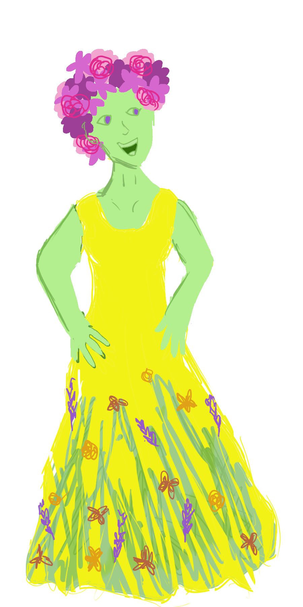

Persephone is the Goddess of Agriculture, and only daughter of Zeus and Demeter. Despite her and Hades’ contradictory personalities and livelihoods their marriage was forged after Hades abducted her one day from the mortal flower fields of Nysian where she was picking flowers with her fellow maidens. Following her abduction, her mother Demeter, the Goddess of Harvest and Earth’s Fertility was so distraught that she could only weep while she was gone, and thus Winter came around. When the humans and Earth began to suffer as a result, Zeus struck up a deal with Hades in which Persephone spent two-thirds of the year with her mother (bringing on Summer, Fall, and Spring) and one-third of the year with Hades in the Underworld in which Winter would come back around.
Back to Start